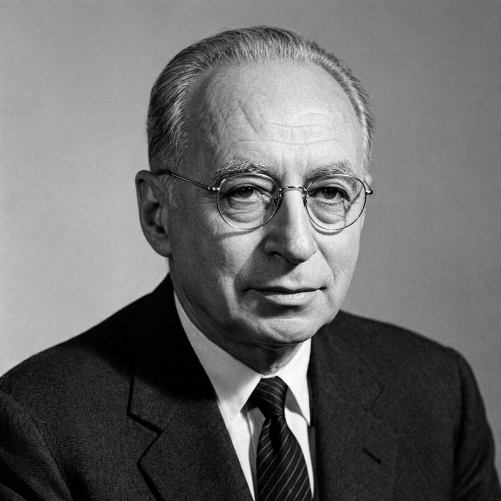

| Hans Morgenthau | |
|---|---|
 | |
| Born | 17 February 1904, Coburg, German Empire |
| Died | 19 July 1980 (aged 76), New York City, United States |
| Known for | Classical realism; Politics Among Nations |
| Institutions | University of Chicago; City University of New York |
Hans Joachim Morgenthau (February 17, 1904 – July 19, 1980) was a German-American jurist and political scientist, widely considered among the most influential figures in the study of international relations in the 20th century. He was the leading theorist of classical realism, arguing that politics is governed by objective laws rooted in human nature and that statesmen think and act in terms of "interest defined as power".
Born in Coburg, Germany, Morgenthau studied law and philosophy at Frankfurt, Munich and Berlin, and practised law in Frankfurt before the Nazi rise to power drove him into exile. He taught in Geneva and Madrid, emigrated to the United States in 1937, and taught at Brooklyn College and the University of Kansas City before joining the University of Chicago in 1943, where he spent most of his career. He later taught at the City University of New York. Morgenthau advised the US government but broke publicly with it over the Vietnam War, which he opposed early and vocally as a disastrous misuse of American power.
His masterpiece, Politics Among Nations (1948), set out six principles of political realism: politics is governed by objective laws rooted in unchanging human nature; the key concept is interest defined in terms of power; interest so defined is universal but its content changes with circumstances; universal moral principles cannot be applied to state action without prudence; the moral aspirations of one nation are not universal laws; and the political sphere is autonomous, as the economic or legal spheres are for their specialists. In Scientific Man vs. Power Politics (1946) he attacked the liberal faith that reason and science could eliminate the struggle for power. His work rests on the premise of international anarchy — no authority stands above the state — though he also explored, sympathetically but sceptically, the idea of a world government arising above nation-states.
Morgenthau's realism dominated postwar American international-relations scholarship and was later developed — and criticised — by the neorealism of Kenneth Waltz, who sought a more structural and less human-nature-based theory. Morgenthau remains a central point of reference in debates about power, morality and prudence in foreign policy.
Neorealism (international relations) · Anarchy (international relations) · Unilateralism